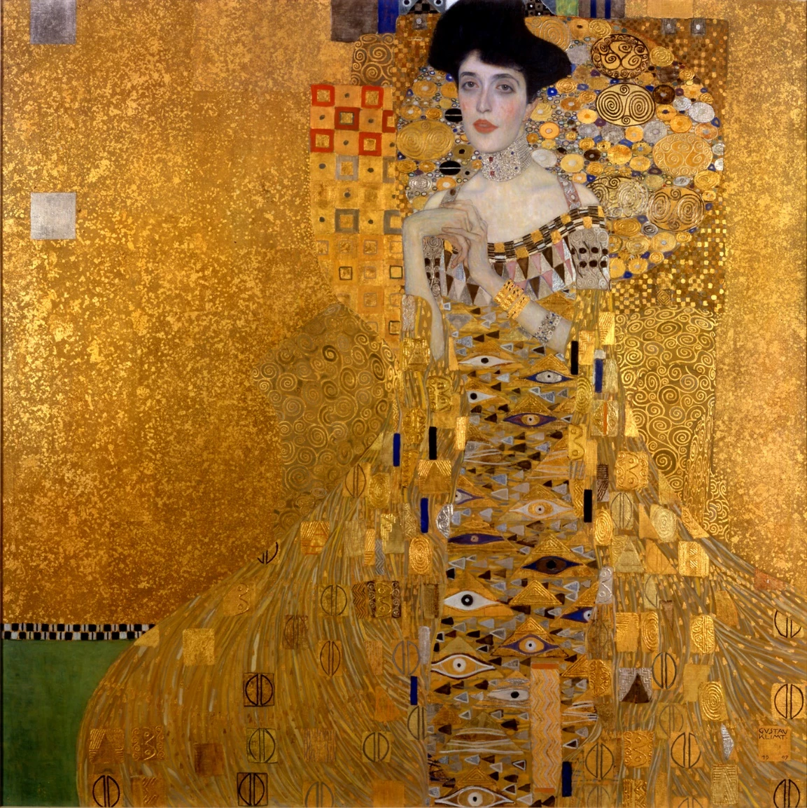

Картина Леонардо да Винчи, одно из самых известных произведений живописи.
Точная дата написания неизвестна (по некоторым сведениям, написана между 1503 и 1505 годами).
Ныне хранится в Лувре. Считается, что на картине изображена Лиза Герардини,
супруга флорентийского торговца шёлком Франческо дель Джокондо.
Картина Леонардо да Винчи, одно из самых известных произведений живописи.
Точная дата написания неизвестна (по некоторым сведениям, написана между 1503 и 1505 годами).
Ныне хранится в Лувре. Считается, что на картине изображена Лиза Герардини,
супруга флорентийского торговца шёлком Франческо дель Джокондо.
 Одна из наиболее известных картин нидерландского художника Яна Вермеера. Её часто называют северной или голландской Моной Лизой.
Картина подписана «IVMeer», но не датирована. Согласно данным музея Маурицхёйс, где картина хранится в настоящее время, она была написана около 1665 года.
О ней известно очень мало. Неизвестно, писал ли её Вермеер на заказ, кто в таком случае был заказчиком и имя изображённой девушки. По одной из версий,
художник изобразил собственную дочь Марию. В любом случае очевидно, что это необычный портрет.
Одна из наиболее известных картин нидерландского художника Яна Вермеера. Её часто называют северной или голландской Моной Лизой.
Картина подписана «IVMeer», но не датирована. Согласно данным музея Маурицхёйс, где картина хранится в настоящее время, она была написана около 1665 года.
О ней известно очень мало. Неизвестно, писал ли её Вермеер на заказ, кто в таком случае был заказчиком и имя изображённой девушки. По одной из версий,
художник изобразил собственную дочь Марию. В любом случае очевидно, что это необычный портрет.

Картина австрийского художника Густава Климта, самый известный из его портретов. Известна также как «Золотая Адель».
Картина считается одним из самых значительных произведений австрийского югендстиля и Густава Климта, который в этом портрете на пике своего «золотого периода»
с неслыханной радикальностью осуществил прорыв в модерн.
 В 1562 году Арчимбольдо был приглашён ко двору императора Священной Римской империи Максимилиана II в Вену,
а далее служил его преемнику Рудольфу II в Праге. Прослужив при дворе Габсбургов около 25 лет, в 1587 году художник вышел в отставку и вернулся в Милан,
однако продолжал создавать произведения в избранном им стиле, которые отсылал в Прагу.
В 1562 году Арчимбольдо был приглашён ко двору императора Священной Римской империи Максимилиана II в Вену,
а далее служил его преемнику Рудольфу II в Праге. Прослужив при дворе Габсбургов около 25 лет, в 1587 году художник вышел в отставку и вернулся в Милан,
однако продолжал создавать произведения в избранном им стиле, которые отсылал в Прагу.